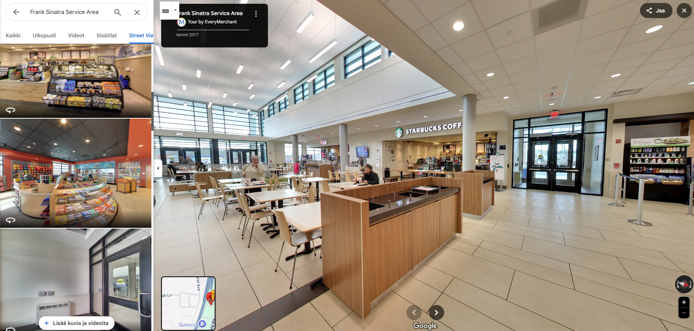

Kauppakeskukset

Virtuaaliesittelyt - Kauppakeskukset
Tutustu kauppakeskuksen tunnelmaan ja pohjaratkaisuun jo ennen paikalletuloa. Parkkeeraaminen saattaa olla joillekin ongelma, etenkin liikuntarajoitetuille, mutta virtuaaliesittelyn avulla voi varmistaa että miltä parkkihallit tai parkkipaikat näyttävät. Pääset myös tutkimaan koko muun kauppakeskuksen täysin etänä.
Virtuaaliesittely on mahdollista lisätä google profiiliin, mutta usein profiilien street view osioihin on jo lisätty 360-kuvia, jotka ovat aivan sekaisin ja niiden sijainti ja yhdistykset ovat todella huonoja. siksi suosittelemme poistamaan kaikki kuvat profiilistanne street view osuudesta ennen esittelyn julkaisemista.
Asiakaskokemuksen parantaminen
- Helpottaa suunnittelua ennen vierailua. Asiakkaat voivat etukäteen nähdä liikkeiden sijainnit, sisäänkäynnit, hissit, WC-tilat, lastenhoitohuoneet ja ruokapaikat.
- Esteettömyyden arviointi. Erityisryhmät voivat tarkistaa esteettömyyden käytännössä – esimerkiksi ovien leveydet, luiska- ja hissireitit.
- Navigointi ja reittien hahmottaminen. Esittelyn avulla asiakkaat osaavat liikkua keskuksessa tehokkaammin, mikä parantaa viihtyvyyttä ja vähentää turhautumista.
- Ensivaikutelman luominen. Visuaalisesti miellyttävä esittely lisää kiinnostusta keskusta kohtaan, etenkin jos asiakas ei ole aiemmin käynyt paikan päällä.
- 24/7 saavutettavuus. Virtuaaliesittely on käytettävissä missä ja milloin tahansa – se palvelee myös iltaisin ja viikonloppuisin.
Markkinointi ja näkyvyys
- Google-näkyvyyden parantaminen. Google Street View -esittelyt voivat nostaa kauppakeskuksen hakutuloksissa ylemmäs ja lisätä näkyvyyttä Googlen karttapalvelussa.
- Erottautuminen kilpailijoista. Harva kauppakeskus tarjoaa aidosti kattavaa virtuaaliesittelyä – se voi olla selkeä kilpailuetu.
- Kävijämäärän kasvattaminen. Kun asiakkaat näkevät etukäteen, mitä keskuksessa on tarjolla, he todennäköisemmin tulevat paikan päälle.
- Mainonnan tukeminen. Virtuaaliesittelyn yhteyteen voidaan liittää karttoja, tietoa tarjouksista tai linkkejä liikkeiden verkkosivuille.
Sisäinen käyttö ja operatiiviset hyödyt
- Uusien työntekijöiden ja vuokralaisten perehdytys. Esittelystä voidaan käyttää opastukseen ja tilojen esittelyyn ilman fyysistä kierrosta.
- Tilahallinta ja kehittäminen. Johto ja suunnittelijat voivat käyttää esittelyä työkaluna tilojen käytön optimointiin ja muutostöiden suunnitteluun.
- Huollon ja turvallisuuden suunnittelu. Turvallisuus- ja siivoushenkilöstö voi tutustua reitteihin, hätäpoistumisteihin ja keskeisiin kohteisiin virtuaalisesti.
- Tilojen esittely vuokraustarkoituksiin. Vapaita liiketiloja voidaan esitellä helposti potentiaalisille vuokralaisille – jopa ulkomailta käsin.
Miten prosessi etenee:
- Sopimus - Allekirjoitamme kauppa sopimuksen sähköisesti puolustaaksemme molempia päitä
- Suunnittelu - Sovitaan kuvauspäivä ja aika sekä käydään läpi toiveesi. (kuvauksen aikana olisi hyvä jos tilassa ei ole minkäänlaista liikettä, tämä parantaa kuvien laatua)
- 360° Valokuvaus - Taltioimme tilasi korkealaatuisilla 360 asteen kuvilla.
- Editointi ja julkaisu. Viimeistelemme esittelyn ja julkaisemme sen Google Mapsiin ja lähetämme nettisivu valmiin linkin esittelyyn. (tarvittaessa myös embed koodin)
Hinnat
- Google virtuaaliesittelyn hinta määräytyy ravintolasi koon mukaan ja maksat vain kerran ilman jatkuvia kuukausimaksuja. Hinnat alkavat 450 eurosta.
- Voit halutessasi lisätä tilaukseen 360- tai 3D-virtuaaliesittelyn nettisivu valmiina! Molemmat lisäävät hintaa alkaen 100€
- 360 nettisivu versiossa veloitamme 2€ kuukaudessa ilmaisen 12kk verkkohotellin jälkeen. 3D nettisivu versiossa veloitamme 10€ kuukaudessa ilmaisen 3kk verkkohotellin jälkeen.
Ota yhteyttä!
Ota yhteyttä niin kerromme miten voimme auttaa sinua hyödyntämään virtuaalitodellisuutta kohteessasi. Rakennamme juuri sinun tarpeisiisi sopivan ratkaisun!